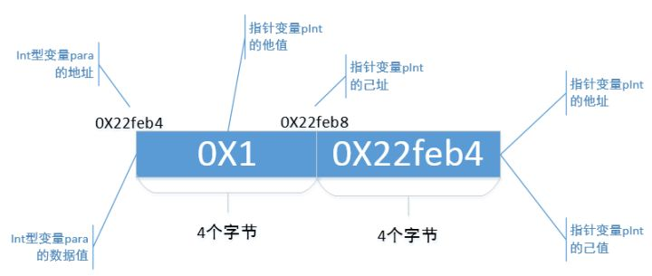

本文中，我对指针总结的维度，用四个字来概括，就是："两己三他"！是不是读起来一点都不顺口，一点都不押韵啊，什么个玩意儿。这"两己三他"，展开来说，就是：己址、己值、他值、他址、他型。
我觉得可以从这5个维度再来聊聊指针。不过在聊之前，我写了个程序，把指针的"两己三他"维度都包含进来，然后再来一个一个解释每个维度的意思，你看看是不是这回事儿。
在大部分的使用指针的场景下，这5个维度应该足够帮你去理解了。不过在一些使用指针特殊的场景下，可能5维度法帮助不了你。
前方长文预警，若看的不耐烦了，可以收藏本文，有时间了接着看。
一、程序代码
1.1. 代码
实例
运行的结果如下：

我在自己的文章里讲我自己理解的一些东西时，我很喜欢用非常简单的程序来阐明。所以那些认为要用天书般的程序来阐明观点的，或者鄙视低水平程序的大牛们，请忽略我^_^。
2.2. int型变量para
程序中：
int para = 1;
printf("变量para自己的地址是: 0X%x\n", ¶);
printf("变量para自己的值是: 0X%x\n", para);
定义了变量para，它有自己的数据值，也有自己的存储地址，这些个都很好理解。从运行结果来看，变量para自己的数据值是16进制的"0X1"，地址是16进制的"0X22feb4"。换句话说，在内存中，地址为"0X22feb4"开始的存储空间，有4个字节存储了一个数据值"0X1"。在我的机器上，一个int型变量占用4个字节，在你的机器上可能与我不一样。
关于int型变量para大家都好理解。下面，我来画一个示意图，来指明变量para在内存中存储的情况，如下：

下面开始说说"两己三他"的概念。
二、两己三他
"两己三他"，展开来说，就是：己址、己值、他值、他址、他型。
2.1. 己址
2.1.1 "己址"的概念
"己址"，就是"自己的地址"的简称。指针pInt作为一个变量，与int变量para一样，也需要存储在内存中的一段存储空间，这段存储空间也会有一个开始地址，也就是说，指针变量pInt也会有自己的地址。上面说了，变量para的地址是 " 0X22feb4"，那么，指针变量pInt的地址是啥呢？
2.1.2 "己址"的获取
我们都学过，"&"是一个取地址的运算符，在程序中：
printf("指针变量pInt自己的地址是: 0X%x\n", &pInt);
就是通过"&"来获取指针变量pInt的地址。从运行结果来看，指针变量pInt的地址是"0X22feb8"。在我的机器上，指针变量pInt也是占用4个字节，因此，指针变量pInt存储在开始地址是"0X22feb8"开始的4个字节空间。
2.1.3 "己址"的代码写法
在代码中，表示指针变量pInt的"己址"的代码写法，常见的是：
&pInt;
现在，我们来完善那个示意图，图中加入指针变量pInt的"己址"，指出指针变量pInt在内存中是怎么个存储形式。

"己址"，就是这个意思。你看，没什么特别难的吧！
2.2 己值
2.2.1 "己值"的概念
"己值"，就是"自己的数据值"的简称。指针pInt作为一个变量，跟变量para一样，也有着自己的数据值。
2.2.2 "己值"的获取
上面提到，变量para自己的数据值是"1"，那么指针变量pInt自己的数据值是多少。在程序中：
pInt = ¶
printf("指针变量pInt自己的值是: 0X%x\n", pInt);
我通过"&"运算符，将变量para的地址值赋给了指针变量pInt，通过printf来输出指针变量pInt的数据值。从运行结果中来看，指针变量pInt自己的数据值是"0X22feb4"。我们再看，变量para的地址也是"0X22feb4"，所以，
pInt = ¶
这个语句的本质，就是将变量para的地址，给了指针变量pInt的己值，这样就将指针变量pInt与变量para绑定在一起了。
在"己址"中提到了，指针pInt的数据值存储在地址为"0X22feb8"开始的4个字节的内存上，那么也就是说，地址为"0X22feb8"开始的内存，后面的4个字节都用来存储着一个数据值"0X22feb4"。
2.2.3 "己值"的代码写法
在代码中，表示指针变量pInt的"己值"的代码写法，常见的有
pInt;
也有的代码写法是：
pInt + N; pInt - N;
这种写法的意思是用pInt的"己值"加上一个数字N或者减去一个数字N，这个等讲到"他型"这个属性时会提到。也有的写法是：
pIntA - pIntB;
这种写法表示的是两个指针变量用"己值"做减法。
2.2.4 示意图
现在，继续来完善上面的示意图，加入指针变量pInt的己值。

所以，一般而言，"己值"对于指针变量pInt来讲，是自己的数据值；对其它的int类型的变量来讲，就是它们的地址。
2.3 他址
2.3.1 "他址"的概念
"他址"的概念就是"他人的地址"的意思。其实在上面提到己值时，就已经不那么明显地提到了"他址"的概念。
2.3.2 "他址"的获取
整型变量para存储在内存地址为"0X22feb4"开始的4个字节。在程序中，我通过
pInt = ¶
将变量para的地址给了指针变量pInt，这样就将指针变量pInt与变量para绑定在一起了。更为本质的说，是把"他人的地址"赋值给了指针变量pInt的"己值"，这里，"他人的地址"的"他"，指的就是变量para，"他人地址的址"的"址"，指的就是变量para的地址。注意，你看，"他址"和"己值"在数据值上是一样的，所以，你领悟出了什么东西来了没？
很多教材所谓的"指针是一个地址变量，存储的是其它变量的地址"，说白了，就是在说"他址"这个维度的数据值等于"己值"这个维度的数据值，只是教材没说的那么明白。
2.3.3 示意图
再来完善那个示意图，这次加入"他址"的概念。

2.4 他值
2.4.1 "他值"的概念
"他值"，就是"他人的数据值"的意思。
2.4.2 "他值"的获取
在程序中，我通过
pInt = ¶
将变量para的地址给了指针变量pInt的"己值"，这样就将指针变量pInt与变量para绑定在一起了。这个时候，"他人的数据值"的"他"，指的就是变量para，"他人的数据值"的"数据值"，指的就是变量para的数据值"1"。在程序中，我通过
printf("指针变量pInt的他值是: 0X%x\n", *pInt);
也就是指针变量pInt前面加上" * "，来输出指针变量的"他值"，从运行结果来看，是"0X1"。 注意，你看，指针变量pInt的"他值"，与变量para的数据值是一样的，你又领悟到了什么？想不出来吗？继续看！
2.4.3 "他值"的代码写法
你经常在代码中看到的那些个代码写法，比如什么*pInt写法，是在表达什么意思啊，其实就是在计算指针变量pInt的"他值"啊！
这些个写法呢：*(pInt + 1)、*pInt + 1、pInt[1]？
*(pInt + 1)：如果把pInt + 1 看成是另外一个指针，比如
int *pTemp = pInt + 1；
那么*(pInt + 1)计算的本质上就是指针变量pTemp的"他值"；
*pInt + 1：这个就是用pInt的"他值"加1；
pInt[1]：这个呢？其实就是*(pInt + 1)。
2.4.4 示意图
继续完善上面的示意图，这次加入"他值"的概念：

2.5 他型
2.5.1 "他型"的概念
"他型"，就是"他人的类型"的简称。在程序中，我们看到，声明指针变量pInt时这样写的：
int *pInt = NULL;
指针变量pInt前面的" int "并不是说指针变量pInt的"己值"是一个int类型的数据值；而是说，指针变量pInt的"他值"是一个" int "类型的数据值，此处指针变量pInt的"他值"是变量para的数据值"0X1"，因此，指针变量pInt前面的"int"指的就是数据值"0X1"是一个"int"型。
总之一句话，声明指针时的类型是用来修饰"他值"的，而不是"己值"。
你再看，在声明变量para的时候：
int para = 1;
变量para前面的"int"就是指变量para的类型是一个整型，此时的"int"对para来说是一个"自型"，也就是"自己的类型"的意思，只有指针在声明时的类型是"他型"，是"他人的类型"。
既然"他型"是来修饰"他值"，那么在声明指针时还要加上这个"他型"有什么意义呢？继续看！
在程序中，如下代码片段：
int arr_int[2] = {1, 2};
pInt = arr_int;
printf("arr_int第一个元素arr_int[0]的地址是: 0X%x\n", pInt);
printf("arr_int第二个元素arr_int[1]的地址是: 0X%x\n", pInt + 1);
我把一个整型数组arr_int的地址赋给了指针变量pInt，那么pInt的"己址"没有变化，还是 0X22feb8，但是"己值"却变了。
刚才指针变量pInt的"己值"还是" 0X22feb4"，也就是变量para的地址，现在变成了"0X22feac"，这个可是数组arr_int第一个元素的地址。也就是说，指针变量pInt的"己址"不会改变，但是"己值"是可以被改变的。
现在我们来看看"pInt"与"pInt + 1"的区别，这是在用pInt的"己值"在做运算。从运行结果来看，pInt的"己值"此时是"0X22feac"，而pInt + 1的"己值"是" 0X22feb0"，你发现了吗，两者正好相差4个字节，而一个"int"类型的数据也正好占用了4个字节。
你可能会认为，既然pInt + 1是用"己值"加1，那么应该是"0X22feac + 1" = "0X22fead"才对啊，为什么不是这样呢？这就是指针变量pInt的"他型"搞的鬼。
"他型"的意思，用大白话来说，就是："我说 pInt 大兄弟啊，你的他值是个int型的数据值，你今后要是用你的己值 +1，+2，或者 -1，-2，可千万别傻乎乎的就真的加1个字节，加2个字节， 或者就真的减1个字节、减2个字节。人家int类型占4个字节，你就得按照4个字节为一个单位，去加 1* 4个字节 、2 * 4个字节，或者减去1 * 4个字节、2 * 4个字节，知道不？哦，顺便说下，pInt + N的N，可以为正数也可以为负数"。
当然啦，如果你的机器上"int"型数据占8个字节，那么pInt + 1就是在"己值"上加8个字节，pInt + 2就是在"己值"上加 8 *2 = 16个字节，就这么个意思。
我在程序中又举了个例子来说明这个"他型"。程序如下：
double *pDouble = NULL;
double arr_double[2] = {1.1, 2.2};
pDouble = arr_double;
printf("arr_double第一个元素arr_double[0]的地址是: 0X%x\n", pDouble);
printf("arr_double第二个元素arr_double[1]的地址是: 0X%x\n", pDouble + 1);
这次声明一个指针变量pDouble，它的"他型"是个"double"型，它的"己值"是数组arr_double的地址，它的"他值"是数组arr_double[0]这个元素的数据值" 1.1 "。在我的机器上，一个double型占用8个字节，那么pDouble + 1就是用pDouble 的"己值"加 1 * 8个字节，pDouble + 2就是用pDouble 的"己值" 加 2 * 8= 16个字节，pDouble - 1就是pDouble 的"己值"减去 1 * 8个字节，pDouble - 2就是pDouble 的"己值"减去 2 * 8 = 16个字节，我滴个乖乖！朋友们可以对着运行结果自己计算对不对！
3. 总结
是时候来总结下了。
我声明一个指针变量：
type *pType = NULL;
pType有5个维度，分别是：
pType = (己址，己值，他址，他值，他型)；
3.1 己址：即"自己的地址"
指针变量pType作为一个变量，也有自己的地址，常见的代码写法是"&pType "。
己址在一般的程序中不会被频繁地用到，如果要用的话，就涉及到"指针的指针"，这又是另外一个话题了，本文不讨论；
3.2 己值：即"自己的数据值"
指针变量pType 作为一个变量，也有自己的数据值，代码的写法是"pType "。
也可以在己值上做加减法运算，常见的代码写法有"pType + N"、"pType - N"、"pType2 - pType1"等。
3.3 他址：即"他人的地址"
指针变量pType的己值，意义除了表示自己的数据值外，还表示了与pType绑定在一起的"type"类型的变量的地址。一般而言，指针变量pType的"己值"与"他址"在数据值上是一样的。
将一个type类型的变量与pType绑定在一起的常见方式是：pType = &变量；
3.4 他值：即"他人的数据值"
一旦type类型的变量与pType绑定在一起，指针变量pType可以通过一些代码写法，来获取type类型变量的值，也就是"他值"。常见的代码写法有：" *pType "、" pType-> "等。
而这些代码的写法：" *(pType + N) "、" *(pType - N) "、" pType[N]"也是获取的"他值"，不过需要特别说明一下：
pType + N 你可以看成是：
type *pTemp = pType + N;
" *(pType + N) "其实计算的就是指针变量pTemp的"他值"。
" *(pType - N) " 你就好理解了吧；
" pType[N]"其实就是" *(pType + N) "，你就死记硬背吧。
3.5 他型：即"他人的类型"
声明指针变量pType时，前面的"type"不是用来修饰pType 的"己值"的，而是用来修饰"他值"的，也就是说，"type"不是说pType的"己值"是一个type类型的数据值，而是指pType 的"他值"是一个type类型的数据值。
"他型"在代码中的作用，主要是计算"pType + N"、"pType - N"时，pType要加上或者减去 ( N * sizeof(type) )个字节。
指针总是让人晕晕的，很可能就是让你晕在这5个维度里的一个或者几个上。把这5个维度好好理解透，指针啊，只是个纸老虎。
4. 习题讲解
讲完了5个维度，不来点上手习题怎么行。下面列举几个习题，都是跟指针有关的，都是让初学者晕的歇菜的。我用这5个维度来解读这些题，你看看是不是要轻松一点！
4.1 数组元素求和
4.1.1 程序
第一个例题是很常见的程序，就是求一个数组元素的和，程序如下：
实例
程序很简单，先是输出数组的所有元素，然后计算出数组所有元素的和。运行结果如下：

4.1.2 "两己三他"的解读
4.1.2.1 输出数组元素
在输出数组元素时，代码如下：
pArr = arr;
printf("%d ", pArr[index]);
这句代码等同于
pArr = arr;
printf("%d ", *( pArr + index));
这里面使用了"己值"、"他型"做了加法运算，使用了"他值"获取数组元素。
"己值"：代码先是将数组名 arr的数据值赋值给了pArr的"己值"。而数组名arr的数据值是啥啊，是arr[0]元素的地址，对吧！那么pArr的己值，也是arr[0]的地址，对吧！这样一来，pArr就和arr[0]绑定起来了。
至于( pArr + index)的意思呢，你就看成有一个间接的、临时的指针变量pTemp：
int *pTemp = pArr + index;
也就是说，pArr + index其实也是一个指针pTemp，只不过这个pTemp的己值是pArr的己值加上 index * sizeof(int) 个字节数。
"他型"：pArr的他型是"int"型，pArr + index，是在pArr己值的基础上，加多少个字节呢？pArr的他型是int型，那么pArr + index，是不是意味着pArr的己值加上 index * sizeof(int) 个字节啊！
pArr：可以写成pArr + 0，就是加上 0 * 4 = 0个字节，此时pTemp的己值是arr[0]的地址；
pArr + 1：就是加上1 * 4 = 4 个字节，此时pTemp的己值是arr[1]的地址；
pArr + 2：就是加上2 * 4 = 8 个字节，此时pTemp的己值是arr[2]的地址；
这样，pArr + index就遍历到了数组所有元素的地址了。
你会发现，pTemp的己值，一直在发生变化；pArr的己值和己址，一直未变。
"他值"：既然pArr + index能够遍历到数组所有元素的地址，再使用 *(pArr + index) ，也就是*pTemp，是不是就能获取到pTemp的他值了，这样也就变量到数组所有元素的值了！
4.1.2.2 数组元素求和
求数组元素的和时，使用的代码如下：
sum = sum + *(pArr + index);
根据刚才我对输出数组元素的分析，这句代码中pArr是怎么玩的，大家也清楚了吧！
pArr + index依然是在用pArr的己值做加法运算，获取到一个临时指针pTemp的己值，这个pTemp的己值是每个数组元素的地址；
再用 *(pArr + inedx)，也就是*pTemp， 获取临时指针pTemp的他值，也就是每个元素的值。
最后将pTemp的每一个他值，叠加起来，算出数组元素的和。
4.1.2.3 总结
大家试着用"两己三他"的维度去理解pArr、pArr + index、*(pArr + index)、pArr[index]、*pArr + index等常见的代码写法！
4.2 指针数组
指针数组是将指针与数组结合起来的东东，对于初学者朋友而言，会比较难理解。指针数组是一个比较大的话题，相关概念请参见一般的C语言教材，这里只是用"两己三他"的概念来解释程序中的指针部分概念。
4.2.1 程序
指针数组，我举了一个例子如下：
实例
运行结果如下：

4.2.2 "两己三他"的解读
4.2.2.1 输出所有的字符串
先看指针数组的定义：
char *arr[3] = {"abc", "def", "ghi"};
你看到的这个数组的每个元素好像是一个字符串，其实本质上是这样的：
char *pChar1 = "abc", *pChar2 = "def", *pChar3 = "ghi";
char *arr[3] = {pChar1, pChar2, pChar3};
数组arr的每个元素其实是一个"他型"是"char"的指针。
arr[0]就是pChar1这个指针，那么pChar1的己值或者他址是啥，当然是字符串"abc"的字符'a'的地址，那么：
printf("%s ", arr[0]);
本质上是：
printf("%s ", pChar1);
使用pChar1的己值或者他址，从字符'a'的地址开始，一个一个地输出后面的'b'和'c'。
对于pChar2和pChar3也是一样地理解。
4.2.2.2 输出第一个字符串"abc"的每个字符
代码如下：
char *pArr = arr[0];
printf("%c ", *(pArr + index) );
将arr[0]，也就是pChar1的己值给了pArr的己值，那么pArr的己值和他址都是字符'a'的地址。
pArr + index 是在pArr的己值上，加上 index * sizeof(char) 个字节，给了一个临时指针变量pTemp：
char *pTemp = pArr + index;
这个指针pTemp的己值或者他址，会依次为字符'a', 'b', 'c'的地址，也就是pTemp的他值也会依次为字符'a', 'b','c'，这样指针pTemp就会依次遍历到字符串"abc"的每一个字符了。
4.3 链表
链表是使用指针最为频繁的，什么插入节点、删除节点等，都会遇到如下的代码写法：
p2 = p1->next; p1->next = p3->next; ......
这TM什么玩意儿，晕的一腿啊！这个next指针，那个next指针，跳来跳去的，我了个去，头脑已经充满浆糊了。呵呵，指针5维度分析法来了！不过，关于链表，我觉得还是另外开辟一个文章讲吧。等把链表讲完，回头再讲这些个next指针，我跟你讲，链表的本质也就那样，你懂了之后，链表比指针还要纸老虎。
作者：石家的鱼
来源：https://zhuanlan.zhihu.com/p/27974028